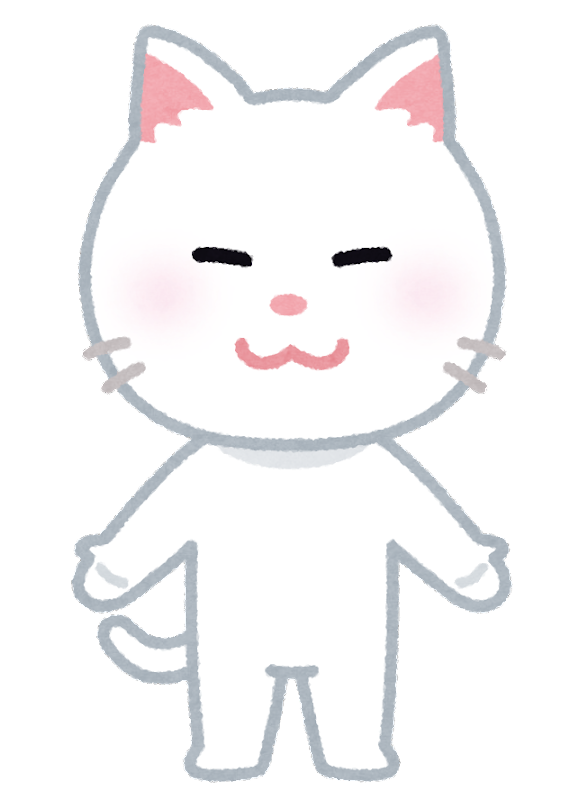

안녕하세요, 進 by Jiin 홈페이지에 오신걸 환영합니다!
제 이름은 김지인입니다.
이름으로 말장난하는 것을 좋아해서 곰곰이 생각하다가
건바이건,, 진바이진? 해서 언젠간 써먹어야지라고 했던 이름을 홈페이지에 쓰게 되었네요. 😊
여기에 의미를 살짝 불어 넣어 나아갈 진(進)을 사용해 進 by Jiin,
하루 하루를 나아가는 나의 모습을 담은 홈페이지가 완성되었습니다!
저에 대해 더 알고 싶으시다면 상단의 INFO바를 눌러주세요. 😉